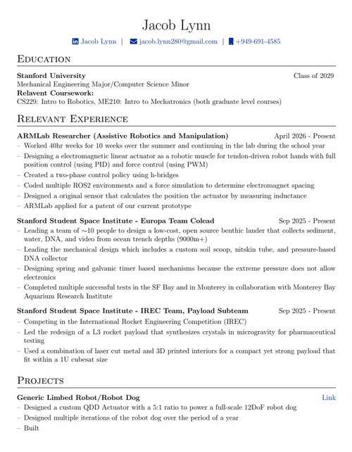
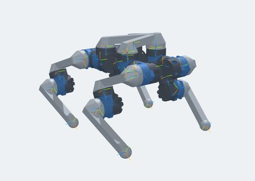
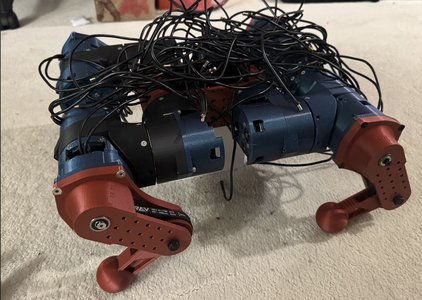
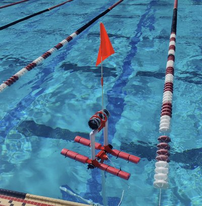
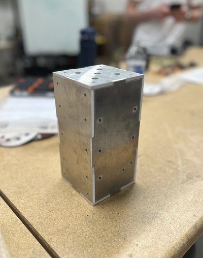

Mechanical engineer · Stanford '29
Jacob Lynn
Mechanical engineering at Stanford, Class of 2029, with a minor in CS. I build robots, and someday I want to build them for space.
About Me
Hi! I'm Jacob Lynn and I am a sophomore (Class of 2029) studying mechanical engineering with a minor in comp sci at Stanford University. I also do research in the Stanford ARMLab where I work on electromagnetic robotic muscles for tendon-driven robot hands! I'm interested in robotics and space and I've always loved to create. My dream job would someday be to work on space robotics :).
This website is meant to serve as a portfolio of what I have made in college so far! I hope you look around, and please reach out to me if you have any questions or thoughts: jnlynn@stanford.edu
- School
- Stanford University, Class of 2029
- Major
- Mechanical Engineering
- Minor
- Computer Science
- Research
- Stanford ARMLab: electromagnetic muscles for tendon-driven robot hands
- Interests
- Robotics, space
- Dream job
- Space robotics
Resume

Click the preview to open my resume as a PDF.
Projects

Reconfigurable Robot Builder
A browser tool for assembling robots from modular actuators (motor + gearbox stacks) and links, defined by D-H parameters.
Read more →
Limbed Robot Project
A generic framework for limbed robots: swappable QDD gearboxes and screw-in links. Built a 12-DoF robot dog with it.
Read more →
Europa - Benthic Lander
Co-leading a low-cost (<$5k) open-source benthic lander for trench-depth ocean research.
Read more →
IREC - Payload
Mechanical redesign of a 100×100×200 mm payload that grows crystals in microgravity.
Read more →